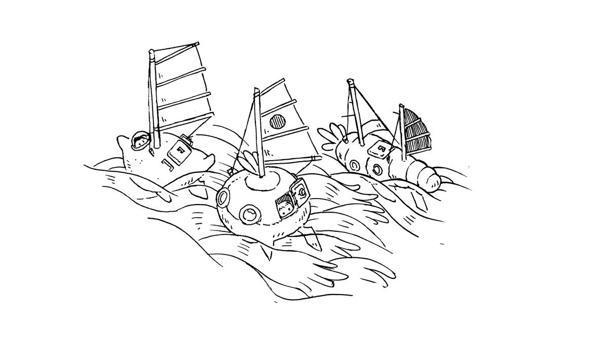

buying a sailboat
Why live on a boat?
1. The scenery changes everyday. If you're at anchor (see anchoring), the boat turns with the wind and you find yourself with a new view. If you don't like your neighbours, you have the option of hauling anchor and moving somewhere else. Having the freedom to move from place to place unhindered is wonderful.
2. You have a small ecological footprint. A boat is a gateway to self-reliance, with systems that are off the grid. With solar you consume no power, with wind propulsion there are no emissions, and because water is limited to your tanks, you are aware of how much you use and treat it like the precious resource that it is.
3. Low-cost home ownership. For a lot less money, you can own something and make it yours. You can anchor in downtown Vancouver for free, and share the same view as expensive condos lining the shore. Note that unlike a house, a boat will only decrease in value. See details on costs.
4. You can travel with your house. This is ideal for us, as creatives, to be able to go to different places while our cocoon stays the same.
what boat to buy
When we began looking for a sailboat to buy, we'd spend evenings browsing listings online, trying to figure out what sort of vessel best suited our needs and budget. Next are questions to ask yourself to help narrow your search:
1. Budget. What is the max amount of money you're willing to spend on a yacht. Be realistic, be cautious. Keep in mind that you will probably put a lot more money into it afterwards, even more if you plan to take it offshore. There is a yacht out there for any budget, but it's important to remember that the cheaper it is the more time and work you will have to put back into it. If time is a factor, you may prefer to pick a turn key yacht. If you have a limited budget, choosing a smaller boat is a smart move. Dock fees are priced on boat length, and every bit of gear gets more pricier when sized up. 8-11 m is the sweet spot when it comes to boats.
2. Location. Where do you want to be cruising/living? Depending on your goals, it may be better to buy the boat in another country, although this comes with its own set of complications. If you don't have much experience, you're better off choosing a boat near your home grounds. If you do this, you won't have to deal with